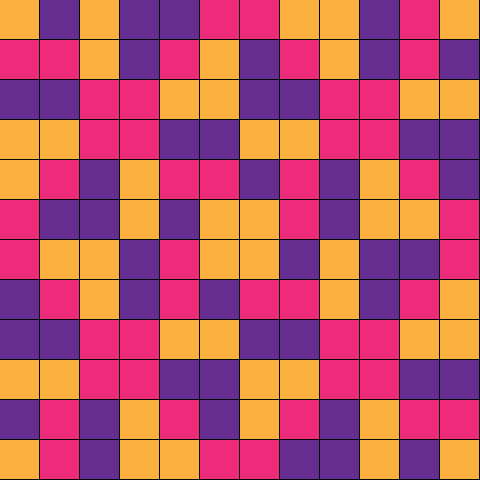

Hexagramme 1 — Fu, Le Retour
N° chronologique 1 (ordre par poids binaires) · n° King Wen (traditionnel) 24 · 復
Par Anibal Edelberto Amiot — Mis à jour le 18 septembre 2026

la mère
le fils aîné
Le Tonnerre au sein de la Terre : l'image du retour. La force vitale, enfouie au plus profond de l'hiver, n'a pas disparu — elle attend, invisible, le moment de resurgir. C'est la figure du renouveau caché dans l'apparente immobilité. Ainsi les anciens rois, au solstice, fermaient les passages, marchands et voyageurs ne circulaient plus : il est des moments où le plus grand geste consiste à ne rien précipiter, pour laisser le retour s'accomplir de lui-même.
Le principe vital revient au cœur de la nuit la plus dense. Rien n'est jamais définitivement perdu tant que subsiste, quelque part, ce germe minuscule qui recommence. Ce trait dit que le point le plus bas contient déjà, en germe, le mouvement du retour — c'est précisément dans l'obscurité la plus totale que la lumière recommence à croître.
Les six traits
À la base de la terre, le plein s'ébranle : l'amorce yang qui portait la figure entière consent à céder la place.
La terre réceptive atteint son comble : l'accueil silencieux qui portait le bas de la figure va s'affirmer.
Au seuil entre terre et homme, la souplesse se charge : ce qui cédait par nature s'apprête à durcir.
Dans l'écoute de l'homme, le creux se comble : la disponibilité qui recevait va bientôt s'affirmer.
À la place du sage, le vide s'emplit : la souplesse qui gouvernait avec discrétion se charge d'une force nouvelle.
Au sommet, le vide atteint son comble et se referme : l'ouverture la plus extrême bascule vers son contraire.
Sources : La Livrée d'Hermès, Anibal Amiot — chapitre 7.1 « Trame » (p. 63 à 68).
Pour comprendre les notions évoquées ici — carré magique, calque et tirage, Yi-King — consulte le lexique du projet.
Hexagrammes voisins
0 — Kun, Le Réceptif · 2 — Shi, L'Armée
Hexagrammes liés par un trigramme commun
Trigramme supérieur commun (☷ Kun) : 0 — Kun, Le Réceptif · 2 — Shi, L'Armée · 3 — Lin, L'Approche · 4 — Qian, La Modestie · 5 — Ming Yi, L'Obscurcissement de la lumière · 6 — Sheng, La Poussée vers le haut · 7 — Tai, La Paix
Trigramme inférieur commun (☳ Zhen) : 9 — Zhen, L'Ébranlement · 17 — Zhun, La Difficulté initiale · 25 — Sui, La Suite · 33 — Yi, La Nourriture · 41 — Shi He, Mordre au travers · 49 — Yi, L'Augmentation · 57 — Wu Wang, L'Innocence